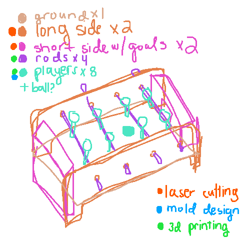

source: target
source: targeti am proposing a mini foosball game and i will breakdown my proposal into the following steps:
when searching for ideas for the final project, i asked my roommates what i should make. one of my roomies is a teacher at a middle/high school and she offered ideas for games, like a foosball table. i thought about making a guess who? game but after some more thought, i decided that it would be more fun and interesting for me to make my own spin on a foosball game. most foosball games IRL represent players as men so i thought it would be fun to put my own spin on the foosball game. moreover, i chose to make this mini, because i simply don't have the capacity to make 22 players (11 players for one team times two teams equals 22), and i wanted to keep this simple considering the time frame and my current skillset.
there are multiple DIY tutorials for creating foosball games, so i plan to reference these for this project! if you're not sure what a foosball game looks like, a regular foosball game looks like this:
source: target source: rhea writes
source: rhea writesi sketched my concept of the mini foosball game!

i am imagining a few tasks:
tbd
tbd
if by some miracle i have extra time, resources, energy, etc. i have a few stretch goals: